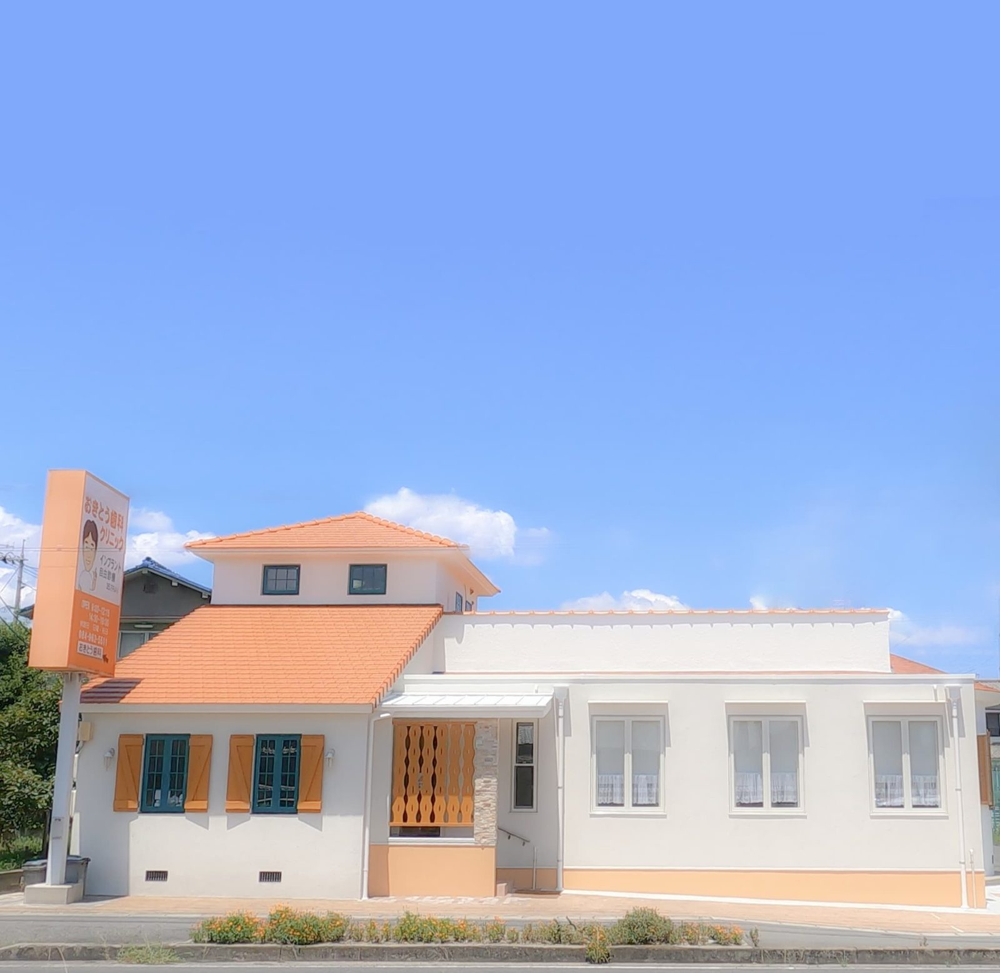
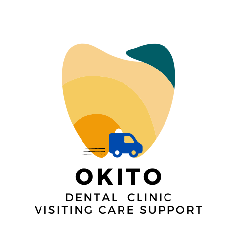
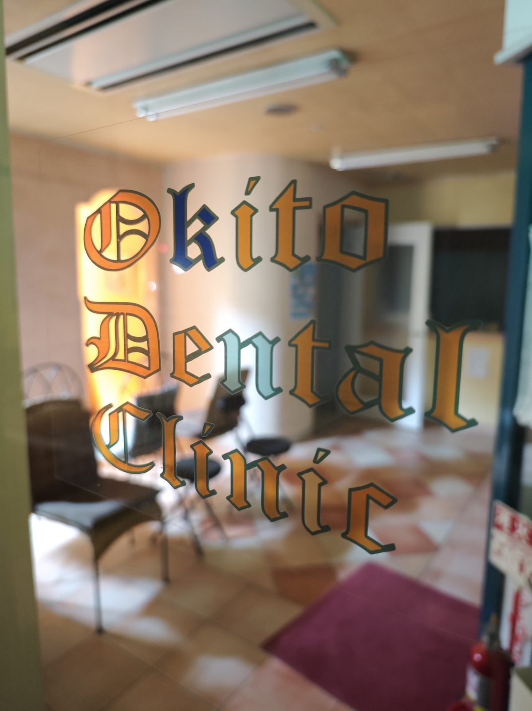
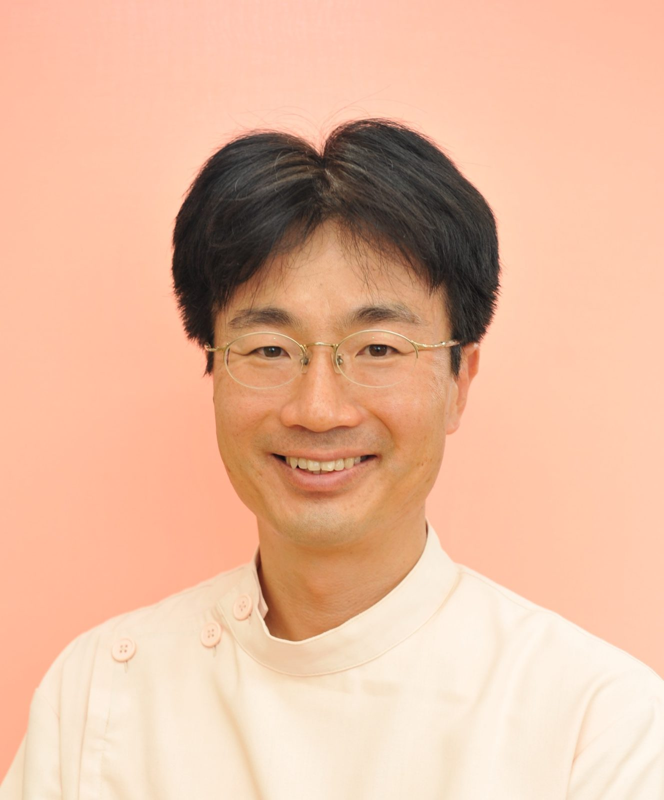
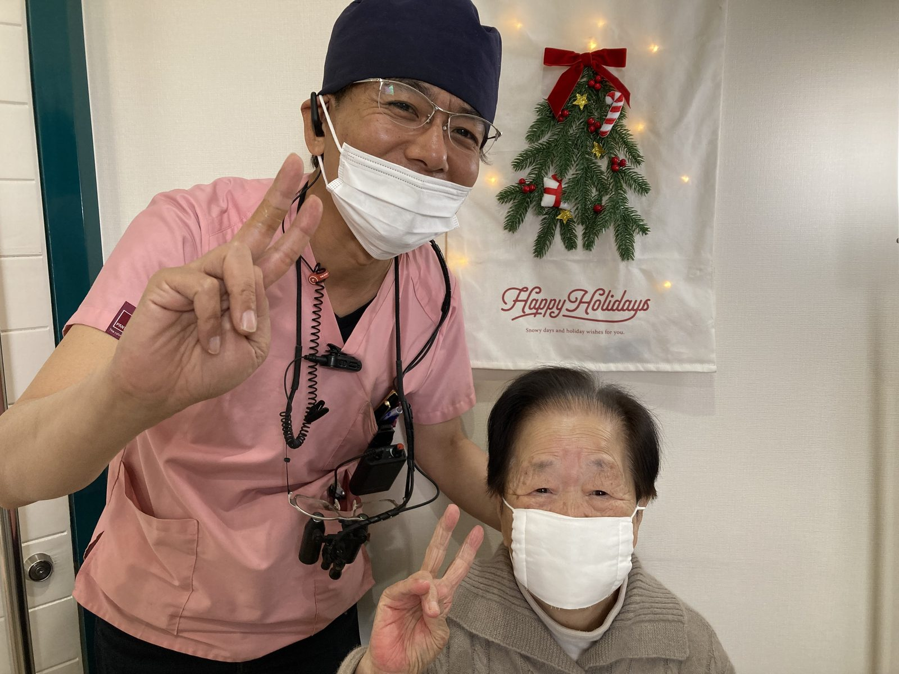
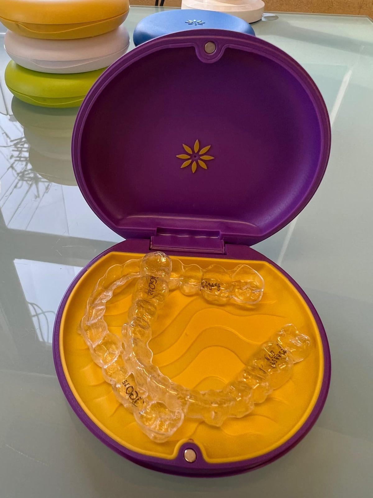
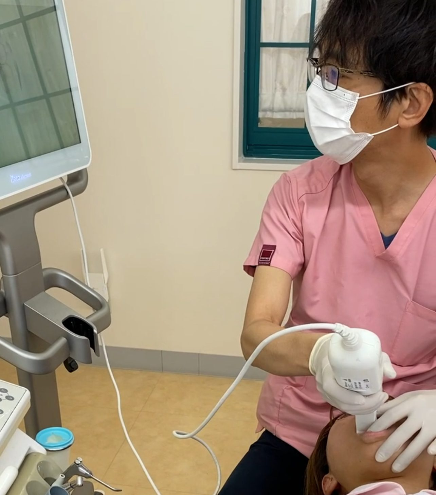
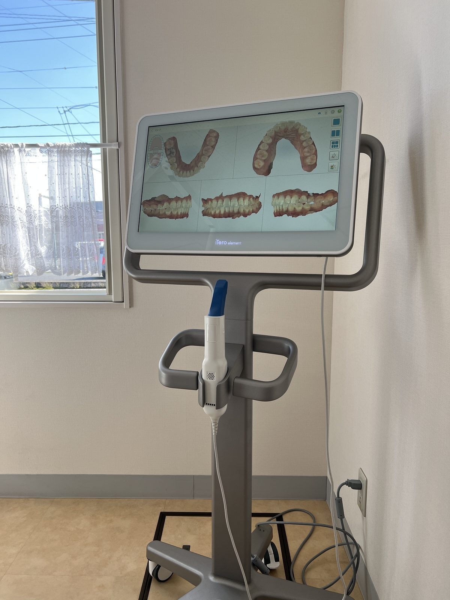
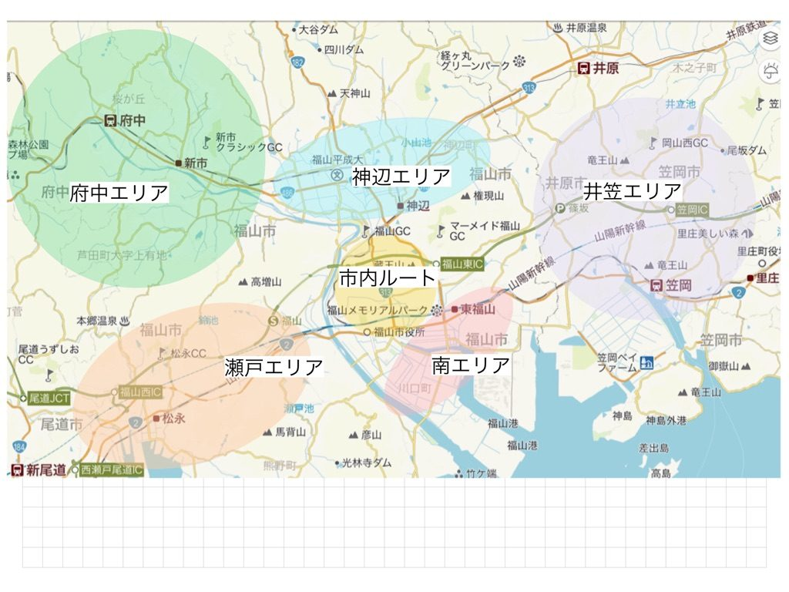
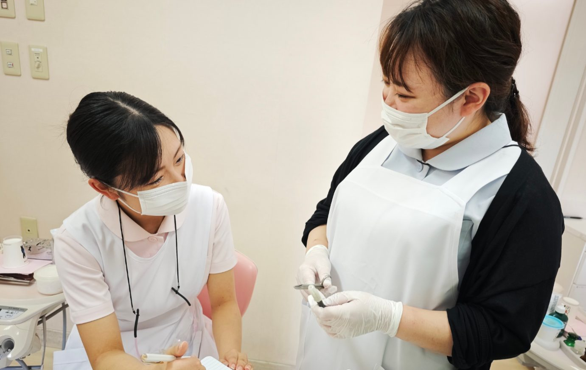

外来も、訪問も。
あなたの歯科衛生士人生に、
二つの景色を。
タップで次へ →
歯科衛生士の皆さまへ
予防を深める。専門診療に触れる。
地域で暮らす人の「食べる」を支える。
ここには、自分に合う歯科衛生士の道があります。

医療法人社団碧雄会
おきとう歯科クリニック
DENTAL HYGIENIST RECRUIT GUIDE
広島県福山市神辺町
地域で暮らす人の、
お口と人生を支える。

おきとう歯科クリニックは、福山市神辺町で25年以上、外来診療と訪問歯科診療の両方に取り組んできました。
クリニックに通う患者さんの予防を支えること。通院が難しくなった方のもとへ出向き、口腔ケアや「食べる」を支えること。
場所が変わっても、歯科衛生士の仕事の中心にあるのは、患者さんの生活を守ることです。
一人ひとりが自分に合った役割を見つけ、無理なく成長できる医院を目指しています。
私たちが大切にする
3つの考え方
ようこそ、
おきとう歯科クリニックへ

おきとう歯科クリニックでは、外来診療と訪問歯科診療を通じて、地域の皆さまのお口の健康を支えています。歯科衛生士が安心して働き、それぞれの得意分野を育てていける環境を整えることが、よりよい医療につながると考えています。まずは医院の雰囲気や、実際に働くスタッフの姿を見に来てください。

最初から、自分の進みたい道が決まっていなくても問題ありません。予防、インビザライン、インプラント、訪問口腔ケア、摂食嚥下。実際の診療を経験しながら、自分に合う分野を見つけられるのがおきとう歯科の特徴です。分からないまま一人にせず、先輩と一緒に確認しながら、できることを一つずつ増やしていきます。
数字で見る
おきとう歯科
（25年以上）
総数
医師
衛生士
チーム
/月
休日
/年
※スタッフ数は2026年6月時点の確定値。

一つの医院で、
こんなに多くの経験ができます。
外来で経験できること
- 30分枠の予防メンテナンス
- スケーリング・歯周基本治療・口腔衛生指導
- インプラント診療のアシスト
- インビザラインとiTeroスキャン
- プレオルソなどの小児矯正
- 自費CR・審美補綴
- サージカムHD映像での診療の振り返り


訪問で経験できること
- 高齢者・通院困難な方への口腔ケア
- 歯科衛生指導・診療補助
- 摂食嚥下・口腔リハビリ
- 施設・ご家族・ケアマネとの多職種連携
- Dr・DH・COによるチーム診療
- タブレットを使った記録

働き続けられることも、
大切な成長です。
- 週休2日制／日曜・祝日休診
- 年間休日120日以上
- 入社半年後に有給休暇10日付与
- 半日単位での有給取得OK
- 産前産後・育児・介護休業制度
- 社会保険完備／通勤手当／制服貸与
- 賞与 年2回
- 年1回の昇給・人事評価
- 退職金制度・ベースアップ制度
- 外来DHの報奨金制度
- 院外研修費用の補助
- 嚥下・口腔リハビリ等の講習会参加実績
- 健康診断
- 約70名規模だから、休暇と相談体制を確保できる
- Notion・LINE WORKSでの情報共有
- 訪問はDr・DH・COの3職種で動くチーム制
「見て覚えて」ではなく、
一緒に確認しながら身につける。
入社後は、先輩DHが一人ひとりの成長に伴走します。最初に「私はこんな歯科衛生士になります」という目標を設定。教育計画、毎日のTo Do、日誌、自己評価を一つにつなげ、今できていることと次に学ぶことを確認します。
手順だけでなく「なぜそうするのか」まで共有し、自分で考えて動ける歯科衛生士を育てます。
| 時期 | 内容 |
|---|---|
| 入社初日 | オリエンテーション |
| 1週目 | 先輩の診療見学とアシスト |
| 1〜3か月 | マンツーマン指導 |
| 毎日 | 日誌とフィードバック |
| 定期 | 自己評価と習得状況の確認 |
| 独り立ち後 | 予防・矯正・インプラント・訪問などへ展開 |

1日の流れ
出勤・診療準備 → 9:00 午前診療 → 12:30 昼休憩 → 14:30 午後診療 → 18:30 診療終了・片付け・退勤
9:00 準備・ルート共有 → 9:10 チームで出発 → 午前訪問 → 昼休憩 → 午後訪問 → 帰院後、記録・翌日準備
先輩の声
見学のとき、先輩が患者さんにも私にも丁寧に接してくれたのが決め手でした。教育担当の先輩がついてくれるので、経験が浅くても安心して飛び込めました。一人でできることが少しずつ増えていく毎日です。
スキャンから経過フォローまで任せてもらえるのがやりがいです。新しい取り組みに手を挙げると任せてくれる医院なので、やりたいことがある人には面白い環境。頑張りをきちんと評価してもらえます。
訪問では衛生士が口腔ケアの主役です。講習会にも参加しながら「食べること」を支えるケアを追求しています。患者さんやご家族から感謝される瞬間が一番のやりがいです。
40代での転職でしたが、入社後1ヶ月は先輩と同行できる体制と聞いて決めました。無理のないペースで独り立ちでき、残業もほとんどなく毎日きちんと業務を終えられています。

TO FUTURE DENTAL HYGIENISTS
未来の歯科衛生士さんへ
歯科衛生士の道は、一つではありません。予防を極める道。矯正やインプラントに関わる道。訪問診療で、人生の最期まで「食べる」を支える道。後輩を育て、チームを支える道。
おきとう歯科クリニックには、実際に働きながら、自分の道を見つけられる環境があります。まずは見学で、医院の空気と働くスタッフの姿を確かめてください。
TEL 084-962-5511
診療科目：一般歯科／予防歯科／審美歯科／インプラント／インビザライン／訪問診療／小児歯科
| 月〜金 | 土 | 日祝 | |
|---|---|---|---|
| 9:00〜12:30 | ● | ● | — |
| 午後 | 14:30〜18:30 | 14:00〜18:30 | — |
※土曜午後は外来14:00開始（訪問診療は14:30開始）
見学のお申し込みは
公式LINEで
LINEアプリが開きます
候補日が2つあるとスムーズです
続きは、あなたのペースで
OKITO DENTAL CLINIC
医療法人社団碧雄会